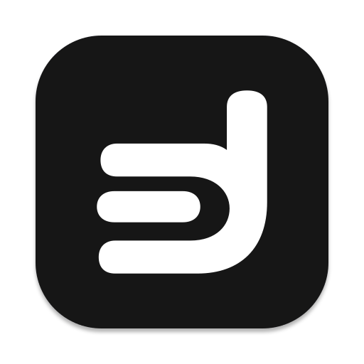

<!doctype html><html lang="en"><meta charset="utf-8"><title>doem — Task d</title><style>body{margin:0;background:#eee;font:16px system-ui}section{padding:48px}img{max-width:100%;height:auto}h2{font-weight:500}</style><section style="background:#f6f6f3"></section><section style="background:#17181c"></section><section><h2>App icon</h2><h2>Actual-size marks</h2></section></html>